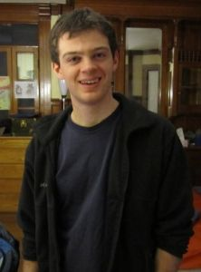

I'm a PhD student in computer science, advised by Stuart Russell.
My primary current project is the application of Bayesian inference to nuclear test monitoring: given seismic waveforms from a global network of stations, we want to infer seismic events that plausibly explain the observed signals. Portions of this work have been funded by the CTBTO and DTRA.
I am also interested more generally in statistical machine learning, especially in probabilistic programming, i.e., how to specify and automatically perform inference in complex probability models, and also in nonparametric Bayesian statistics, in particular Gaussian processes. I'm hopeful that these interests can advance the Project of AI.
Before coming to Berkeley, I was an undergrad at Williams College, where I majored in CS and math and wrote a senior thesis with Andrea Danyluk.

Email: dmoore@cs.berkeley.edu
Office: Sutardja Dai Hall, 7th floor, desk 108.
Calendar: here.
Detecting weak seismic events from noisy sensors is a difficult perceptual task. We formulate this task as Bayesian inference and propose a generative model of seismic events and signals across a network of spatially distributed stations. Our system, SIGVISA, is the first to directly model seismic waveforms, allowing it to incorporate a rich representation of the physics underlying the signal generation process. We use Gaussian processes over wavelet parameters to predict detailed waveform fluctuations based on historical events, while degrading smoothly to simple parametric envelopes in regions with no historical seismicity. Evaluating on data from the western US, we recover three times as many events as previous work, and reduce mean location errors by a factor of four while greatly increasing sensitivity to low-magnitude events.
@article{moore2017signal,
title = {Signal-based Bayesian Seismic Monitoring},
author = {David A. Moore and Stuart J. Russell},
journal = {Artificial Intelligence and Statistics (AISTATS)},
year = {2017},
month = {April},
address = {Fort Lauderdale, FL},
}
Gaussian processes have been successful in both supervised and unsupervised machine learning tasks, but their computational complexity has constrained practical applications. We introduce a new approximation for large-scale Gaussian processes, the Gaussian Process Random Field (GPRF), in which local GPs are coupled via pairwise potentials. The GPRF likelihood is a simple, tractable, and parallelizeable approximation to the full GP marginal likelihood, enabling latent variable modeling and hyperparameter selection on large datasets. We demonstrate its effectiveness on synthetic spatial data as well as a real-world application to seismic event location.
@article{moore2015gprf,
title = {Gaussian Process Random Fields},
author = {David A. Moore and Stuart J. Russell},
journal = {Advances in Neural Information Processing Systems (NIPS)},
month = {December},
year = {2015},
address = {Montreal},
}
@article{moore2014uai,
title = {Fast Gaussian Process Posteriors with Product Trees},
author = {David A. Moore and Stuart J. Russell},
journal = {Proceedings of Uncertainty in AI (UAI)},
month = {July},
year = {2014},
address = {Quebec City},
}We introduce a novel approach for parallelizing MCMC inference in models with spatially determined conditional independence relationships, for which existing techniques exploiting graphical model structure are not applicable. Our approach is motivated by a model of seismic events and signals, where events detected in distant regions are approximately independent given those in intermediate regions. We perform parallel inference by coloring a factor graph defined over regions of latent space, rather than individual model variables. Evaluating on a model of seismic event detection, we achieve significant speedups over serial MCMC with no degradation in inference quality.
@article{song2017chrom,
title = {Parallel Chromatic MCMC with Spatial Partitioning},
author = {Jun Song and David A. Moore},
journal = {AAAI Workshop on Distributed Machine Learning},
year = {2017},
month = {February},
address = {San Francisco},
}
We introduce a framework for modeling parameter symmetries in variational inference by explicitly mixing a base approximating density over a symmetry group. We show that this can be done tractably for the case of a Gaussian mixture over the orthogonal group under an isotropic variance assumption. Initial results show that inference with a symmetrized posterior avoids component collapse and leads to improved predictive performance.
@article{moore2016symvi,
title = {Symmetrized Variational Inference},
author = {David A. Moore},
journal = {NIPS Workshop on Advances in Approximate Bayesian Inference},
year = {2016},
month = {December},
address = {Barcelona},
}
@misc{moore2013agu,
title = {SIG-VISA: Signal-Based Vertically Integrated Bayesian Monitoring},
author = {David A. Moore and Alex Ning Ding and Kevin Mayeda and Stephen C. Myers and Stuart J. Russell},
howpublished = {American Geophysical Union (AGU) Fall Meeting (poster)},
month = {December},
year = {2013},
address = {San Francisco, CA},
}Gaussian process (GP) regression is a powerful technique for nonparametric regression; unfortunately, calculating the predictive variance in a standard GP model requires time O(n^2) in the size of the training set. This is cost prohibitive when GP likelihood calculations must be done in the inner loop of the inference procedure for a larger model (e.g., MCMC). Previous work by Shen et al. (2006) used a k-d tree structure to approximate the predictive mean in certain GP models. We extend this approach to achieve efficient approximation of the predictive covariance using a tree clustering on pairs of training points. We show empirically that this signicantly increases performance at minimal cost in accuracy. Additionally, we apply our method to "primal/dual" models having both parametric and nonparametric components and show that this enables efficient computations even while modeling longer-scale variation.
@article{moore2013mstnd,
title = {Product Trees for Gaussian Process Covariance in Sublinear Time},
author = {David A. Moore and Stuart J. Russell},
journal = {UAI Workshop on Models of Spatial, Temporal, and Network Data (UAI-MSTND)},
year = {2013},
month = {July},
address = {Bellevue, WA},
}
Localization tools such as the CTBTO's GA (Global Association) system work by analyzing detections of arriving phases; these detections constitute a discretized, thresholded summary of information from the underlying seismic waveforms. By contrast, our SIG-VISA (SIGnal-based Vertically Integrated Seismic Analysis) system operates directly at the level of the raw waveforms or envelopes, applying Bayesian inference to a generative probabilistic model of seismic traces to search for the event bulletin having the highest posterior probability given the observed signals. We exhibit a SIG-VISA prototype demonstrating improved sensitivity and localization performance compared to purely detection-based methods.
The SIG-VISA generative envelope model views the observed signal envelope as the composition of a background noise process plus a set of arriving phase envelopes; in its simplest form, each phase envelope consists of a parameterized template perturbed by an autoregressive process. We build station-specific models for the template shape parameters, including amplitude and coda decay rate across multiple frequency bands, as well as the parameters of the noise and signal perturbation processes. We show empirically that our signal-based model leads to increased sensitivity compared to a purely detection-based model, since by comparing the observation likelihoods under the signal and noise models we can extract statistical evidence from sub-threshold arrivals (or their absence) which would otherwise be ignored. This capability is especially valuable for faintly detected (low-magnitude and/or teleseismic) events.
A further advance of SIG-VISA is the incorporation of nonparametric modeling using Gaussian processes (GPs). Known to the geophysics community as the mathematical foundation of kriging, GPs provide a probabilistic framework for predicting the attributes of future events based on past events in similar or nearby locations. SIG-VISA makes use of GP models for the template shape parameters, improving localization performance relative to simpler parametric models of the types used in previous systems (e.g. NET-VISA). Moreover, we are developing a nonparametric model for the template perturbations that captures the phenomenon of correlated waveforms from nearby events; this allows a waveform matching effect to fall out naturally from the probabilistic inference.
@article{moore2012mrr,
title = {Progress in Signal-based Bayesian Monitoring},
author = {David A. Moore and Kevin Mayeda and Stephen C. Myers and Min Joon Seo and Stuart J. Russell},
journal = {Proceedings of Monitoring Research Review (MRR)},
year = {2012},
month = {September},
address = {Albuquerque, NM},
}
Our project has initiated and will develop and evaluate a new Bayesian approach for nuclear test monitoring. We anticipate that the new approach will yield substantially lower detection thresholds, possibly approaching a theoretical lower bound that we hope to establish. We will also develop new techniques to implement such monitoring capabilities within a general-purpose Bayesian modeling and inference system that may eventually support a wide range of information-system needs for arms treaties.
In ongoing work that is moving towards possible deployment, we have completed a prototype seismic monitoring system based on a generative, vertically integrated statistical model linking hypothesized events to “detections” extracted from raw signal data by classical algorithms. On test data sets of naturally occurring events curated by human experts, our system exhibits roughly 60% fewer detection failures than the currently deployed automated system, SEL3, that forms part of the International Monitoring System.
The current phase of the project moves away from hard-threshold detections altogether. Instead, the generative model spans the full range from events to measured signal properties. Given the observed signal traces, the statistical inference algorithm attempts to maximize a whole-network statistical measure of the likelihood that an event – or collection of events – has occurred. Specialized techniques such as waveform matching and double differencing are realized within our framework as special cases of probabilistic inference; our initial experiments using 2D simulated data indicate that a full Bayesian analysis can provide more accurate absolute and relative locations than double differencing, while simultaneously estimating the velocity structure of the observed region.
As we move toward a full-scale implementation, the primary tasks will involve the development of accurate predictive models of waveform properties. These models will combine both parametric forms (for example, triangular envelopes in multiple frequency bands) and nonparametric forms based on previously observed waveforms from nearby events. Hybrid models will smoothly interpolate between these two forms depending on the distance of the hypothesized event from previously observed events.
@InProceedings{russell2011mrr,
title = {Bayesian Treaty Monitoring: Preliminary Report},
author = {Stuart J. Russell and Stephen C. Myers and Nimar S. Arora and David A. Moore and Erik Sudderth},
booktitle = {Proceedings of Monitoring Research Review (MRR)},
year = {2011},
month = {September},
address = {Tucson, AZ},
}
Learning the relational structure of a domain is a fundamental problem in statistical relational learning. The deep transfer algorithm of Davis and Domingos attempts to improve structure learning in Markov logic networks by harnessing the power of transfer learning, using the second-order structural regularities of a source domain to bias the structure search process in a target domain. We propose that the clique-scoring process which discovers these second-order regularities constitutes a novel standalone method for learning the structure of Markov logic networks, and that this fact, rather than the transfer of structural knowledge across domains, accounts for much of the performance benefit observed via the deep transfer process. This claim is supported by experiments in which we find that clique scoring within a single domain often produces results equaling or surpassing the performance of deep transfer incorporating external knowledge, and also by explicit algorithmic similarities between deep transfer and other structure learning techniques.
@InProceedings{moore-starai-2010,
title = {Deep Transfer as Structure Learning in Markov Logic Networks},
author = {David A. Moore and Andrea Danyluk},
booktitle = {Proceedings of the AAAI-2010 Workshop on Statistical Relational AI (StarAI)},
year = {2010},
month = {July},
address = {Atlanta, GA},
}
Note: please contact me if you plan to use any of this code! Some of it may be poorly documented or broken in its current form, but I'm glad to help figure out how it can be useful to you.
Elbow is a flexible framework for probabilistic programming, built atop TensorFlow. It's focused on modular construction of probabilistic models and variational posterior representations.
Matrizer is an optimizing compiler for linear algebra expressions: it tries to infer matrix properties and rewrite computations for efficient and numerically stable execution. New: try the interactive web interface!
The TreeGP package implements Gaussian process regression in Python, with efficient posterior calculations via cover trees as described in our UAI-MSTND paper above.
I'm not currently teaching. Courses I've TA'd in the past:
In my spare time, I play violin with the UC Berkeley Symphony Orchestra. We play about one concert set per month during the academic year, with a wide range of great repertoire (see the website for details). Tickets are only $5 for Berkeley students, so come check us out!
If you're a Williams or Berkeley undergrad thinking about applying to CS grad schools, feel free to get in touch; I'm more than happy to talk about my experiences with the process! I can't guarantee to be helpful, but I can guarantee to be more helpful than either of these guys.
I've started a blog to contain writings on CS and non-CS topics. I'm not sure yet how often it'll be updated.